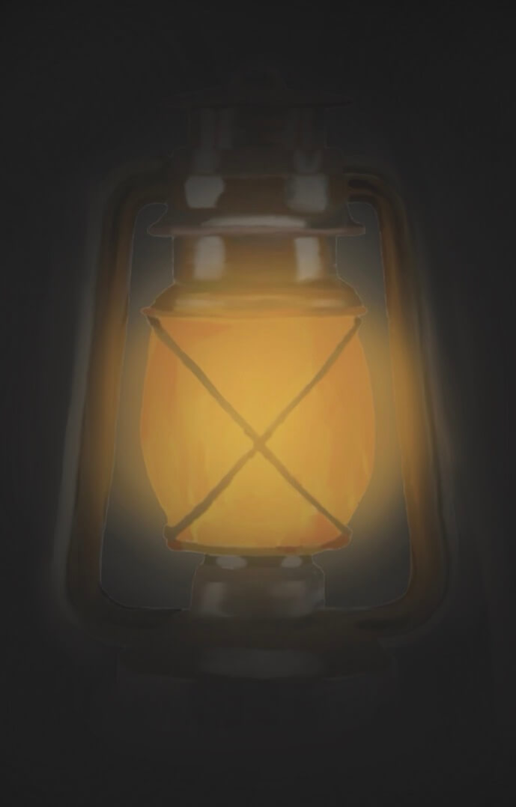

Hello I am a first year transfer student at SJSU majoring in DMA
I had to draw a food from a picture in a 2D drawing program
A stance on how unhealthy fast food is for you. Done in a 2D drawing program
I was tasked to recreate a portrate of an artist that I admire. I choses to recreate the famous Salvador Dali portrate in a 2D drawing program
Surrealist art piece done in photo shop

I wanted to play around with lighting in a 2D drawing program
Email: Shane.vieira05@gmail.com